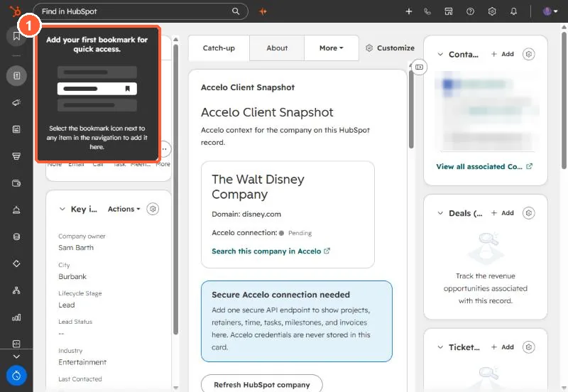

Short answer
The bookmark icon at the top of HubSpot's left navigation holds up to ten menu items you choose. Hover a secondary menu item and click its bookmark icon to add it, use Bookmarks > Manage to reorder, and click the icon again to remove. The sidebar is collapsed by default, and a Keep navigation open control pins it.
1. The bookmarks panel
With none saved, my demo portal shows a prompt explaining how to add one.


2. Add, reorder, remove
- Add: hover a menu item and click its bookmark icon. Up to ten.
- Reorder: Bookmarks > Manage, drag, save.
- Remove: click the bookmark icon on the item again.
3. Good candidates
Settings pages you visit often, such as Properties or Users & Teams, and tools that sit under More, are the most useful to bookmark.